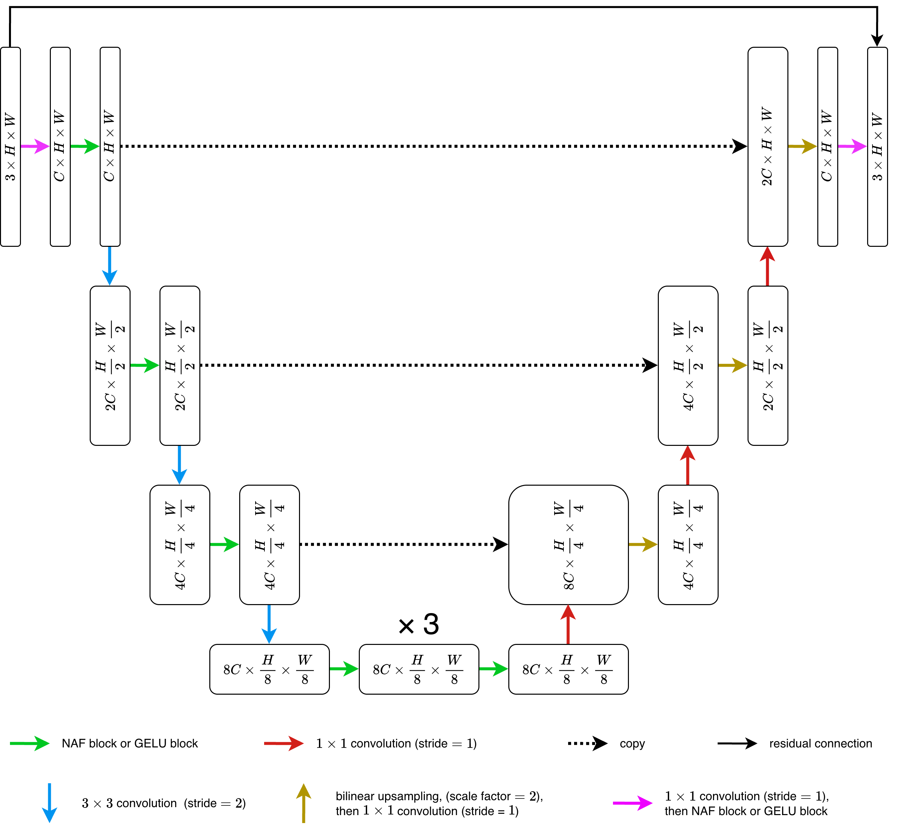
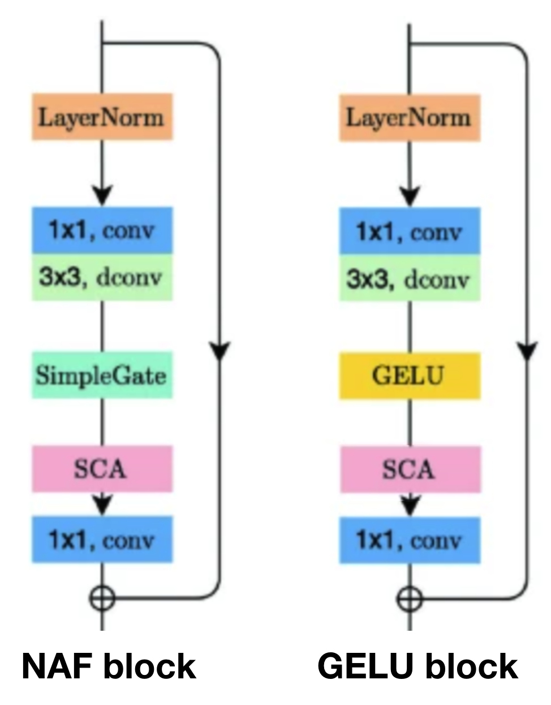
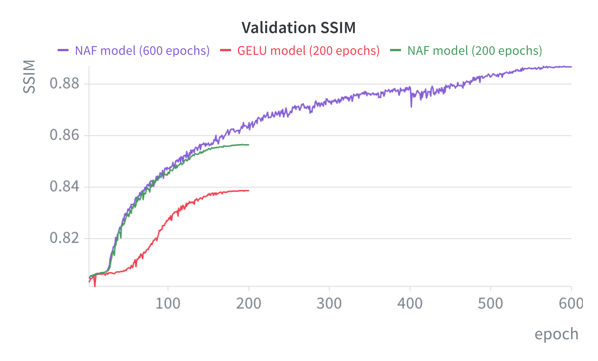
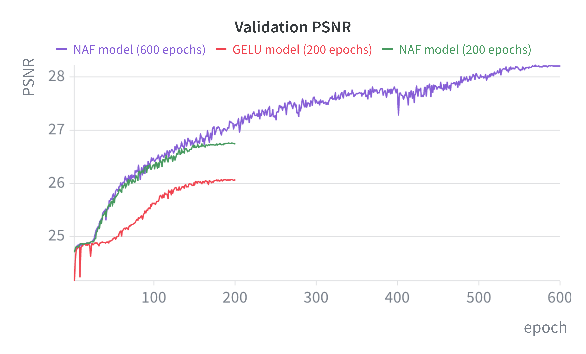

Deblurring U-Net and Ablation Study


In this project, I built a nonlinear-activation-free (NAF) U-Net architecture for motion deblurring. I then implemented a combined L1 and SSIM loss function and trained the model on the GOPRO_Large dataset from Nah et al. [1], achieving an average 27.2 PSNR and 0.832 SSIM on the test set. I also tested the effect of replacing the SimpleGate operations with GELU over shorter training durations. The NAF model outperformed the architecture with GELU activations (+0.75 PSNR, +0.023 SSIM), which is consistent with literature.
About Deblurring, U-Nets, NAFNet and my Project
The goal of a deblurring model is to take in a blurred image as input, and output a sharp version. Convolutional neural networks (CNNs), such as U-Net architectures, are often used for deblurring.
Traditional 'vanilla' CNNs use nonlinear activation functions like ReLU or GELU. Many image restoration models also use channel attention, which involves the sigmoid function. However, image restoration U-Net architectures that removed or replaced these activation functions have been found to work well (even better than conventional architectures). One such architecture is the NAFNet (nonlinear-activation-free network) introduced in "Simple Baselines for Image Restoration" by L. Chen et al. [2].
I also wanted to experiment with replacing a key element from the NAFNet architecture to see for myself how this would impact performance. NAFNet uses SimpleGate in place of nonlinear activation functions. Instead of passing a tensor \(x\) through an activation function, SimpleGate slices \(x\) into two chunks \(x_1\) and \(x_2\), then multiplies the chunks elementwise: $$ \mathrm{SimpleGate} (x) = x_1 \odot x_2. $$ In my experiment, I wanted to test the effect of putting nonlinear activations back into the model, i.e., putting GELU back in the place of SimpleGate. This has been tested in the past by Esaulov and Esfahani [3], who found that the NAFNet outperformed the model with GELU, but I was curious to run a similar experiment myself.
Thus, I built two versions of U-Net architectures, and trained them as described below :
- One of my models has a non-linear-activation-free architecture, and is trained over 500 epochs. I'll call this my 500-epoch NAF model.
- I also trained a model with the same architecture as the 500-epoch NAF model, but over only 200 epochs instead. I'll call this my 200-epoch NAF model.
- My final model, which I'll call my 200-epoch GELU model, is identical to the others, except that all SimpleGate are replaced with GELU activation functions. I trained this model over 200 epochs so it could be compared to the 200-epoch NAF model.
Architecture Design
Below is the U-Net architecture that I designed and implemented with PyTorch. It is based on the U-net architectures from L. Chen et al. [2] and Ronneberger et al. [4].
My architecture uses blocks (NAF blocks or GELU blocks) throughout. This is so that I could easily run my ablation study by switching the type of block used, while keeping the overall U-Net architecture identical. The architectures of the blocks and the following diagrams are adapted from L. Chen et al. [2].

My choices of dimensions \(C, H, W\) are as follows:
- \(C=32\) in order to keep the model lightweight (faster training, less expensive compute-wise)
- I cropped images to \(H=W=256\) so that the memory capacity of the hardware would not be exceeded while also allowing a reasonable number of items per batch. Moreover, I set \(H=W\) so I could randomly flip crops of images during training as to increase diversity of training data.
Some more design choices:
- I made the architecture relatively lightweight in terms of the channel depth, the number of levels, and the number of blocks per level. This is so that training would not take too long, and so if a bug were to be found during training, it would not cause too much of a delay.
- A global residual connection was added connecting the input directly to the output so that the U-Net would only have to learn the difference between the blurred and sharp images, not the entire images themselves.
- Bilinear upsampling was used instead of up-convolutions to avoid checkerboard artifacts described by Odena et al. [5].
Training the Models
I split the training set of GOPRO_Large into two parts: using 10% as a validation set and the remaining 90% to actually train the models.
For optimization, I used a combination of \(\mathcal L_1\) loss and SSIM loss. This involved me implementing the SSIM calculations with PyTorch, using the following formula: $$ \mathrm{SSIM} = \frac {(2\mu_x \mu_y+c_1)(2\sigma_{xy}+c_2)} {(\mu_x^2+\mu_y^2+c_1)(\sigma_x^2+\sigma_y^2+c_2)} $$ where \(c_1=0.0001\) and \(c_2=0.0009\) are constants, and \(\mu_x, \mu_y, \sigma_x^2, \sigma_y^2\) and \(\sigma_{xy}\) are the averages, variances and covariance for patches of images \(x\) and \(y\). From there, SSIM loss is defined as \(\mathcal L_\mathrm{SSIM}=1-\mathrm{SSIM}\).
The specific loss function I implemented is the following: $$ \mathcal L = \alpha \mathcal L_1 + (1-\alpha) \mathcal L_\mathrm{SSIM} $$ where \(\alpha = 0.16\). This value follows a suggestion by Zhao et al. [6] for a similar form of loss function, which is why I decided to use it in the loss function for my project.
I tested a few combinations of different batch sizes and learning rates. After some short trial runs, I chose a batch size of 64. For the 500-epoch NAF model, I used the following learning rate schedule: a linearly increasing "warm-up" for the first 10 epochs, peaking at learning rate 0.0002, then a slow linear decrease, then a cosine annealing for the last 100 epochs. For the 200-epoch NAF model and the 200-epoch GELU model, I used the following schedule: the same 10-epoch increasing linear "warm-up" peaking at learning rate 0.0002, immediately followed by cosine annealing over the remaining 190 epochs.
Results
I tested the trained models on the test split of GOPRO_Large, and measured average SSIM and PSNR of the outputs. PSNR is calculated as \(\mathrm{PSNR} = -10 \log_{10}(\mathrm{MSE})\), since the expected range for the values in the image tensors is \([0,1]\). The table below shows the final metrics achieved by each of the models. As you can see, the 500-epoch NAF model performed the best, followed by the 200-epoch NAF model, then the 200-epoch GELU model.
| Average SSIM | Average PSNR | |
|---|---|---|
| NAF model (500 epochs) | ??? | ??? |
| NAF model (200 epochs) | 0.8318 | 27.18 |
| GELU model (200 epochs) | 0.8088 | 26.43 |
| Unprocessed inputs | 0.7733 | 25.61 |
I also logged the SSIM and PSNR achieved on the validation set at the end of each epoch. As shown by the graphs below, the 200-epoch NAF model was generally able to learn faster than the 200-epoch GELU model throughout training. (Note: both models experienced a very large increase SSIM and PSNR in the first epoch, so the first epoch is omitted in the graphs to make the comparison between models easier.)


Below are samples of the outputs of each model for visual inspection. Samples A and B are \(256 \times 256\) test images that were fed into the models. Samples B and C are zoomed in and cropped patches of test images.
Overall, the improvement in image quality compared to the inputs is definitely visible for all models, but is the most pronounced for the 500-epoch NAF model. For some images, such as image B above, the improvement is less visually obvious. The difference between the 200-epoch NAF model and the 200-epoch GELU model also does not seem very obvious visually. Despite noticeable improvement, the quality of outputs is still not the best, as outputs still appear noticeably blurred/distorted compared to the ground truth images.
Main Takeaways
My 500-epoch NAF model was still quite effective at deblurring images given its relatively small size, as demonstrated by the +0.0585 increase in SSIM and +1.57 increase in PSNR, compared to the unprocessed inputs. However, other models presented in literature achieve much better performance. For example, the state-of-the-art NAFNet achieved 0.967 SSIM and 33.69 PSNR on GOPRO_Large [2], better than any of my models. This is likely because these models involve many times more parameters and compute (often measured in MACs - multiply-accumulate operations). For reference, the official original NAFNet has 67.8 M parameters [7] and 65 G MACs [2], compared to only 1.73 M parameters and 3.99 G MACs for my 500-epoch NAF model. Thus, to improve the performance of my model, I could increase the number of parameters by increasing the initial number of channels \(C\) or adding more NAF blocks at each level. This would require more computation to train, however.
My results suggest that NAFNet-like models can be more effective at image restoration than architectures that replace SimpleGate with GELU. This is in agreement with the experiment done by Esaulov and Esfahani [3]. However, it's important to note that my NAF model also involves more parameters and more compute compared to my GELU model. Namely, my NAF model has 1.73 M parameters and 3.99 G MACs compared to 1.41 M parameters and 3.23 G MACs for my GELU model. Thus, it is still unclear architecture is more effective per parameter, or per unit of compute. This would be an important consideration for models used in edge devices, for example, where memory, compute, and/or energy are limited. Thus, an interesting experiment in the future would be to adjust my two architectures so that they either have the same number of parameters, or the same number of MACs, then train them and test their performance.
References
- [1] S. Nah, T. H. Kim, and K. M. Lee, "Deep multi-scale convolutional neural network for dynamic scene deblurring," in CVPR, 2017. [Online]. Available: https://arxiv.org/abs/1612.02177
- [2] L. Chen, X. Chu, X. Zhang, and J. Sun, "Simple Baselines for Image Restoration," in ECCV, 2022. [Online]. Available: https://arxiv.org/abs/2204.04676
- [3] V. Esaulov and A. Esfahani, "A Comparative Study of NAFNet Baselines for Image Restoration," arXiv preprint arXiv:2506.19845. [Online]. Available: https://arxiv.org/abs/2506.19845
- [4] O. Ronneberger, P. Fischer, and T. Brox, "U-Net: Convolutional Networks for Biomedical Image Segmentation," in MICCAI, 2015. [Online]. Available: https://arxiv.org/abs/1505.04597
- [5] A. Odena, V. Dumoulin, and C. Olah, "Deconvolution and Checkerboard Artifacts," Distill, 2016. [Online]. Available: https://distill.pub/2016/deconv-checkerboard/
- [6] H. Zhao, O. Gallo, I. Frosio, and J. Kautz, "Loss Functions for Image Restoration with Neural Networks," IEEE Transactions on Computational Imaging, 2016. [Online]. Available: https://ieeexplore.ieee.org/document/7797130
- [7] S. Chen et al., Enhancing Motion Deblurring in High-Speed Scenes with Spike Streams. [Online]. Available: https://openreview.net/forum?id=cAyLnMxiTl